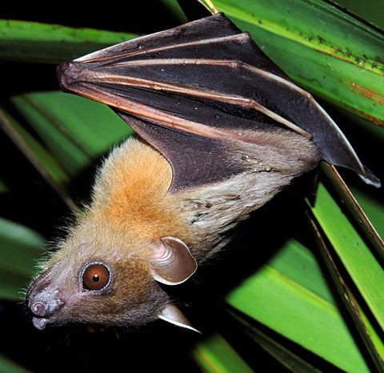

छोटा चमगादड़Greater Short-nosed Fruit Bat
Cynopterus sphinx · Pteropodidae · MAM-0021

- Scientific name
- Cynopterus sphinx (Vahl, 1797)
- Family
- Pteropodidae
- Hindi
- छोटा चमगादड़
- Status here
- native
- IUCN
- LC
- Review
- audited and independently read
When to look कब देखें
Present all year.
Uses and possibilities उपयोग और संभावनाएँ
Drawn from the documented uses in the profile below, where each is labelled traditional, current or a research lead. All uses →
छोटा चमगादड़ / Greater Short-nosed Fruit Bat
Cynopterus sphinx (Vahl, 1797) — Pteropodidae
छोटा चमगादड़ — रात को मंग, पपीता और अंजीर के पेड़ों पर फल खाने वाला एक छोटा, तेज़ चलने वाला चमगादड़। हल्का भूरा-काला रंग, छोटी नाक, और चमड़े वाले पंख। लटकता है पेड़ की शाख़ों से, पंखों को लपेटकर सोता है। रात को पेड़ों से फल तोड़ता है और दूर तक उड़ जाता है, जहाँ फल गिरता है और नए पेड़ लगते हैं। इसका काम बहुत महत्वपूर्ण है — यह प्रकृति का बागवान है, फलों को दूर ले जाकर बीज छिड़ता है। जहाँ बहुत सारे फूल खिलते हैं, वहाँ यह शहद भी पीता है। किसी को नुकसान नहीं पहुँचाता, सिर्फ़ फल खाता है।
Quick Identification त्वरित पहचान
| Feature | Description |
|---|---|
| Size | Forearm length 5–6 cm; wingspan 15–20 cm; weight 25–45 g |
| Head-body | 10–12 cm; small, fox-like head with short muzzle |
| Ears | Small, rounded, not prominent |
| Wings | Dark brown to black; membranous, translucent when backlit |
| Tail | Very small or absent; enclosed in wing membrane |
| Face | Short-nosed; large dark eyes; small nose |
| Coloration | Dark brown to black dorsally; paler ventrally |
| Behaviour | Nocturnal; solitary or in small groups; roosts in trees during day |
Field tip: A small brown bat hanging from a mango or fruit tree at dawn, with a small fox-like face, dark wings, and small ears. Often seen just before sunset or after sunrise. Single individuals or loose groups, not cave-dwelling. The small muzzle is distinctive.
Morphology आकारिकी
Biometrics (typical measurements for Indian populations):
| Measurement | Range |
|---|---|
| Head-body length | 10–12 cm |
| Forearm length | 5–6 cm |
| Wingspan | 15–20 cm |
| Weight | 25–45 g |
Head: Small and fox-like, with a short muzzle. Large dark eyes are forward-facing, providing good stereoscopic vision for navigating branches in dim light. The nose is simple and small, without elaborate leaf-like structures found in some bat families.
Ears: Small, rounded, and inconspicuous.
Wings: Membranous, supported by elongated finger bones (digits 2–5) and connected to the legs and body. The wing is dark brown to black; the membrane is thin and translucent when held to light.
Tail: Extremely small or entirely absent, which is typical of fruit bats (order Megachiroptera).
Fur: Short and dense. The dorsal surface is dark brown to black; the ventral surface is paler, sometimes with a reddish tinge.
Hands and feet: Small with five fingers and toes; clawed for gripping branches and fruit.
Sexual dimorphism: Males and females are similar in size, though males may be slightly heavier due to musculature.
Behaviour & Ecology व्यवहार और पारिस्थितिकता
An obligate fruit and nectar feeder, entirely dependent on flowering and fruiting plants. It is strictly nocturnal, emerging at dusk to forage. Peak activity is in the early night (7–11 PM) and again in the early morning (4–6 AM).
Foraging: The bat flies to fruiting trees and uses its large eyes to locate ripe fruits. It hangs from a fruit while eating, sometimes dropping partly-eaten fruits that scatter to the ground below. The bat swallows fruit whole if small, or chews and spits out pulp, spreading seeds. For larger fruit, it bites out chunks and carries them to a nearby "feeding roost" where it eats in a safer location.
Pollination: When feeding on nectar (particularly from banana flowers and date palms), the bat's face becomes dusted with pollen, which it transfers to the next flower visited.
Roosting: During the day, it roosts in trees, hanging from a branch with its wings folded around its body. Roosting sites are often in mango, neem, or peepal trees within the village or in light forest. Roost sites may be shared by small numbers (5–10 individuals) but the bat is not truly colonial.
Social structure: Solitary or in small groups; no complex hierarchy or vocal communication beyond occasional squeaks.
Reproduction: Breeding is seasonal or year-round depending on fruit availability. The bat produces typically one pup per year.
Life Cycle / Phenology जीवन चक्र
| Stage / Event | Timing |
|---|---|
| Breeding | Year-round; peaks with fruiting seasons |
| Gestation | 3–4 months |
| Birth | Single pup (rarely twins) |
| Lactation | 3–4 months; pup remains at roost initially |
| Fledging | 8–10 weeks; independent by 3–4 months |
| Sexual maturity | 1–2 years |
| Lifespan | 10+ years in the wild |
Host Plants or Prey आहार
- Mango fruit (preferred)
- Fig fruit
- Banana fruit
- Papaya fruit
- Date palm fruit
- Wild fig (Ficus species)
- Sal fruit (occasionally)
- Flower nectar (banana, date palm, other flowering plants)
- Pollen
Predators / Natural Enemies शत्रु
- Large snakes (rat snakes, cobras)
- Raptors (owls, particularly)
- Cats and feral dogs
- Larger predatory bats (rarely)
- Humans (hunting for food or because of perceived crop damage, though minimal)
Agricultural / Human Relevance कृषि प्रासंगिकता
Pollination and seed dispersal service: The primary ecosystem service is pollination of banana, date palm, and other crops, plus fruit dispersal. The bat is extremely beneficial for fruit production and forest regeneration.
Fruit crop interaction: While the bat feeds on mango, fig, and papaya fruits, the amount of fruit loss is minimal—less than 1% even in heavily visited groves. The bat eats individual fruits or parts of fruits but rarely causes commercial loss.
Benefit exceeds cost: The pollination services (especially for banana and date palm, which are flowering plants that attract the bat) and seed dispersal far outweigh the tiny fruit loss.
Cultural status: The bat is little known and generally tolerated. Some rural areas have traditional understanding of its role. No persecution is documented.
Today: Populations are stable and locally abundant where suitable fruiting habitat exists.
Expected Locally स्थानीय रूप से अपेक्षित
Not a field record. Written from published accounts for eastern Uttar Pradesh. No confirmed local sighting yet — if you have seen it, that is what the atlas needs.
अभी तक स्थानीय पुष्टि नहीं। यह विवरण प्रकाशित स्रोतों से है, किसी अवलोकन से नहीं।
Expected in mango and fruit orchards, village groves, and light forest with fruiting trees. Most visible at dusk and dawn. Bats can be observed hanging from branches in the early morning before retreating to deeper shelter.
Distribution वितरण
Global range: Indian subcontinent and Southeast Asia: India, Nepal, Sri Lanka, Bangladesh, Myanmar, and Thailand.
In India: Throughout the peninsula and the Gangetic plains wherever suitable fruiting habitat exists.
In Uttar Pradesh: Common in agricultural areas, orchards, and villages with fruit trees.
In Basti district / eastern UP: Common in mango orchards and fruit-growing areas; expected wherever fruit trees are planted.
Research Questions शोध प्रश्न
Anyone can investigate these | कोई भी इन प्रश्नों की जाँच कर सकता है
- What fruit trees do short-nosed fruit bats visit most frequently? / छोटे चमगादड़ किन फलों के पेड़ों पर सबसे ज़्यादा आते हैं? — Watch fruiting trees at dusk; note visited trees.
- How much mango fruit is lost to bat feeding in a grove over one season? / एक बाग में बैट खाने से कितना आम बर्बाद होता है? — Monitor fallen/damaged fruit; estimate loss percentage.
- How far does a bat fly from its roost to forage? — Mark a roost and track observations in nearby and distant fruiting trees.
- What is the composition of dropped fruit and seeds, and where do they land? — Collect dropped fruit and analyze contents.
- Do banana flowers attract bats, and is pollination successful? — Observe bat visits to banana flowers; monitor fruit set.
Similar Species मिलती-जुलती प्रजातियाँ
| Species | How to tell apart | हिंदी |
|---|---|---|
| Indian Flying Fox (Pteropus giganteus) | Much larger (wingspan 100+ cm), large fox-like face, larger ears, roosts in large colonies | बहुत बड़ा, कॉलोनियों में |
| Pipistrelle or vesper bats | Smaller (10–15 cm wingspan), different echolocation pattern, insectivorous, more acrobatic | चिड़ियों का शिकारी, छोटा |
| Wrinkle-lipped bat | Smaller, different facial structure, insectivorous, cave-roosting | छोटा, कीड़े खाता है |
Field rule: A small brown bat hanging from a fruit tree with a short fox-like face and small ears is a Short-nosed Fruit Bat.
Taxonomy & Classification वर्गीकरण
Original description. Described by Martin Henriksen Vahl in 1797. The epithet sphinx refers to the sphinx-like head posture.
Subspecies. Three subspecies are recognized; Cynopterus sphinx sphinx occurs in northern and central India.
Family and order placement. Pteropodidae (fruit bats and flying foxes), order Chiroptera, class Mammalia. Unlike many insectivorous bats, fruit bats navigate by sight rather than echolocation.
Phylogenetic notes. Cynopterus is a genus of small fruit bats found across Asia. Recent molecular work has clarified its position within Pteropodidae.
IUCN status rationale. Least Concern. Widespread, abundant, and adaptable to human-modified habitats.
Photo Gallery फोटो गैलरी
Photos needed आवश्यक फोटो
- [ ] Bat hanging from a mango branch during the day (पेड़ से लटका चमगादड़)
- [ ] Close-up showing short face and large eye (छोटी नाक, बड़ी आँख)
- [ ] Bat in flight at dusk (उड़ता हुआ)
No photos yet — add field photos to media/species/short_nosed_fruit_bat/ and run node scripts/sync_photos.js.
Atlas Connections संबंधित प्रजातियाँ
- Mango — primary foraging tree
- fig — secondary fruiting tree
- Banana — nectar source for pollination
- Barn Owl — shares the crepuscular hunting times
References संदर्भ
- Vahl, M.H. (1797). Naturhistoriske og Oeconomiske Bidrag. Det Kongelige Danske Videnskabernes Selskabs Skrifter, 2, 199–256. [original description]
- Andersen, K. (1912). Catalogue of the Chiroptera in the Collection of the British Museum, vol. 1. British Museum, London.
- Nowak, R.M. (1994). Walker's Bats of the World. Johns Hopkins University Press, Baltimore.
- Banack, S.A. & Siciliano, S. (2010). Fruit bats as biological models for macroscale plant–bat interactions. Journal of Mammalogy, 91(5), 1092–1103.
- Bhat, H.R. (1994). Roost switch and food habits of Cynopterus sphinx sphinx (Vahl, 1797). Mammalia, 58(1), 119–124.
- GBIF Occurrence Data — Cynopterus sphinx, India (2026).
Source file: species/fauna/mammals/short_nosed_fruit_bat.md